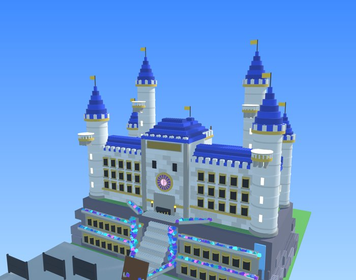
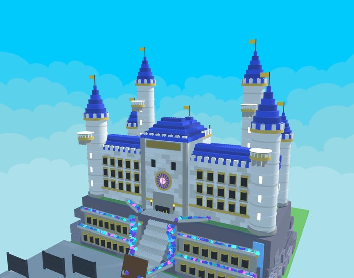
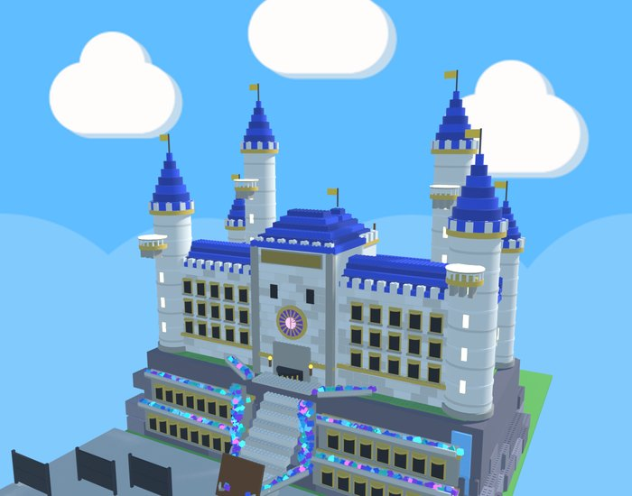
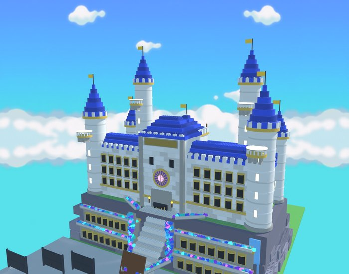
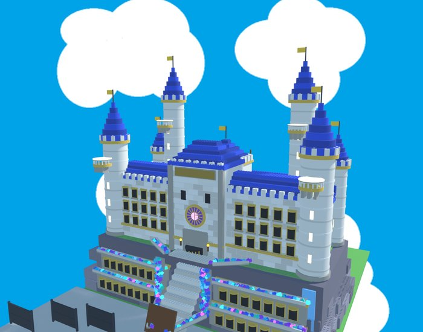
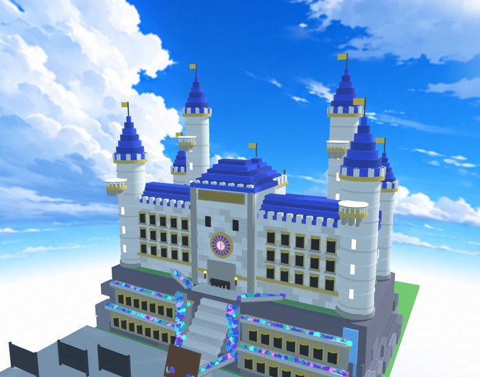
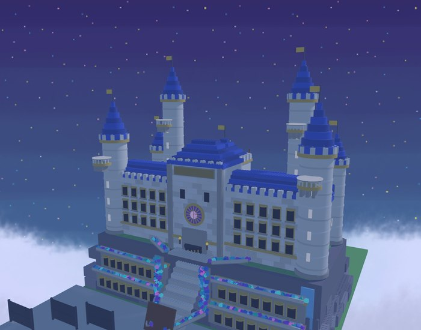
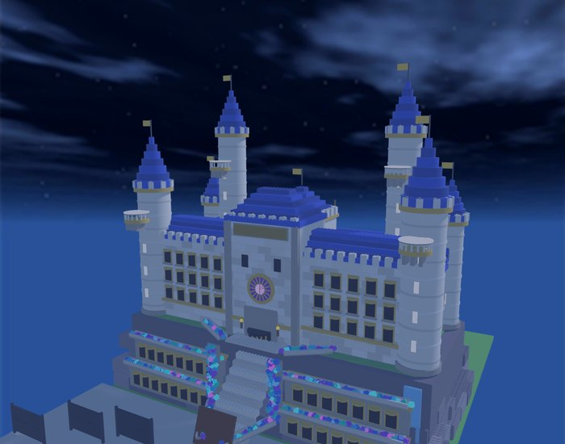

C'est une proposition à valider : rien n'est changé dans le jeu. Chaque ciel de la boutique (gratuit, aucun script, rien de lourd pour le téléphone) est posé derrière un rendu de ton château, pour juger l'effet. Dans le jeu, le ciel tourne autour de toi : on le voit surtout au-dessus de la mer.
Le jour

Aujourd'huiCiel bleu uni de Roblox, sans nuages dessinés.

A. Nuages en bandes mon choixCyan vif et couches de nuages cartoon : le plus « simulateur », va bien avec les briques.

B. Nuages rondsBleu clair et petits nuages tout ronds, très doux.

C. Dégradé + nuages à l'horizonPlus calme, les nuages restent bas.

D. Bleu vif, gros nuagesLe plus audacieux, très plat.

E. Style animeTrès joli, mais plus « peinture » que briques.
La nuit

1. Nuit étoilée sur une mer de nuages mon choixViolet-bleu plein d'étoiles : parfait avec les étoiles filantes.

2. Nuit bleu profondPlus sombre et réaliste, bien pour l'orage.
Comment ça marcherait : le ciel du jour laisse la place à celui de la nuit au milieu du coucher du soleil (quand la lumière est déjà basse, pour que le changement passe inaperçu), et revient au lever. Pendant la pluie et l'orage, les nuages gris de la météo restent par-dessus. Les saisons qui ont leur propre ciel (Halloween, Noël…) le gardent.